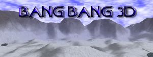
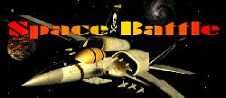
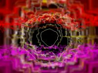
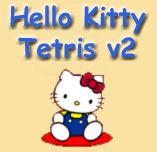

|  |
|
|  |
|
|  |
 |
Other smaller projects
Tintarium
It is a very simple game. It was made in Pascal some years ago. It is of the first games. Gives the user the possibility to save/load his matches, and has pretty good graphics.Fotbal
Paper football has never been so attractive before.You can save/load, change your color,.... and PLAY. :)